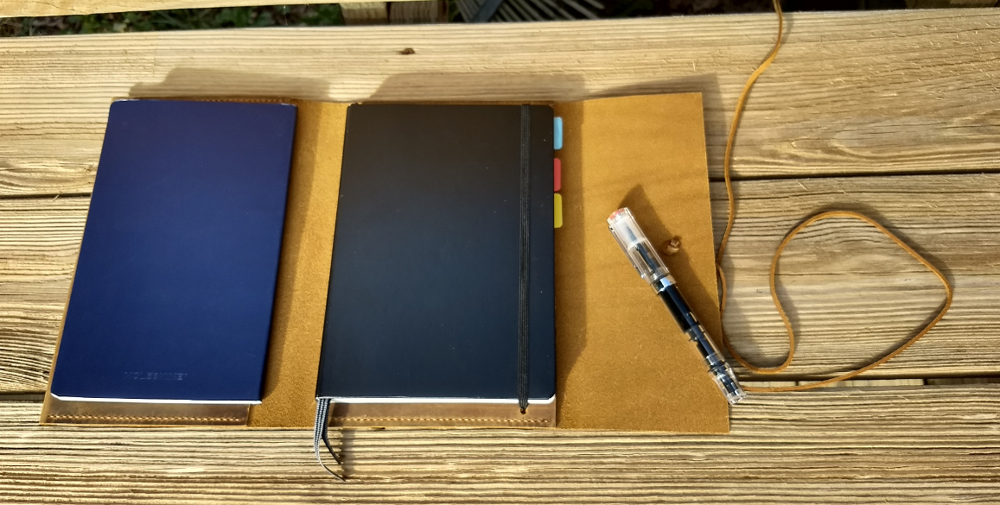
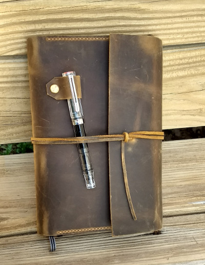

My New "Toy"
I’m a fan of going analog whenever I can manage. Fountain pens and paper are a great way to focus, and to stay organized without waiting on apps or relying on batteries. I’ve used and iterated on my trusty Bullet Journal for some time now. However, as I’ve gotten busier I’ve started missing the pre-printed calendars from when I used to use more structured planners. Not willing to give up the freedom of big note taking spreads and rapid logging, I set out to find a hybrid solution.

Now I can have my cake and eat it, too with a leather cover that holds both my Leuchtturm1917 harcover A5 Bullet Journal and a softcover A5 notebook of my choice. Right now there’s a navy blue Moleskine notebook in there, but I plan to replace it with a softcover calendar.
Where did I find such a thing, you might ask? I couldn’t. I perused Amazon and Etsy, checked some local shops, and to no avail. So, not to be deterred (and with my saddle stitching skills firmly rusted to uselessness), I looked for someone who would take a custom order. D&M Leather Studio, selling through Amazon, had something close to what I wanted in their store. I found their customer service rep very helpful as we talked about my desired modifications, namely:
- sizing the inside pocket to accommodate a second notebook
- changing the snap closure to a leather tie (this is quieter, so I won’t feel like I’m bothering people when I open and close my notebook in a meeting, library, or coffee shop)
- Making the pen loop larger, to accommodate my penchant for chunky fountain pens (TWSBI Eco pictured)
I was like a kid at Christmas waiting for the final product to arrive from China, but it came today1! The quality is excellent. Were I to do it again, the only changes I would make would be to ask that the outside corners be rounded (I may do that myself as an aftermarket mod) and to widen the leather strap closure just a bit.

-
The wait was two days longer than planned due to a mistake by DHL, the shipping company. D&M did a great job of resolving this. ↩︎